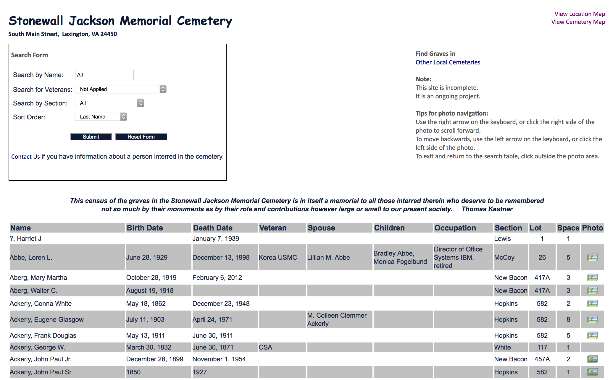
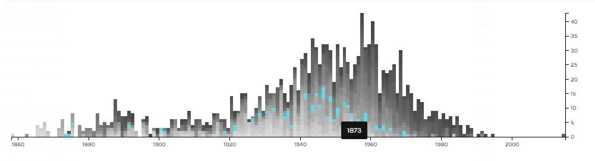

Beyond Primary Sources
Mackenzie Brooks
October 13, 2017
Beyond Primary Sources
Digital Archives in the DH Classroom
Mackenzie Brooks, Assistant Professor and Digital Humanities Librarian
http://digitalhumanities.wlu.edu
DH curriculum
- DH 101 - Introduction to Digital Humanities
- DH 110 - Programming for Non-programmers
- DH 190 - Scholarly Text Encoding
DH 101

DH 101 v.2

DH 102 - cemetery database

DH 102 - cemetery database
